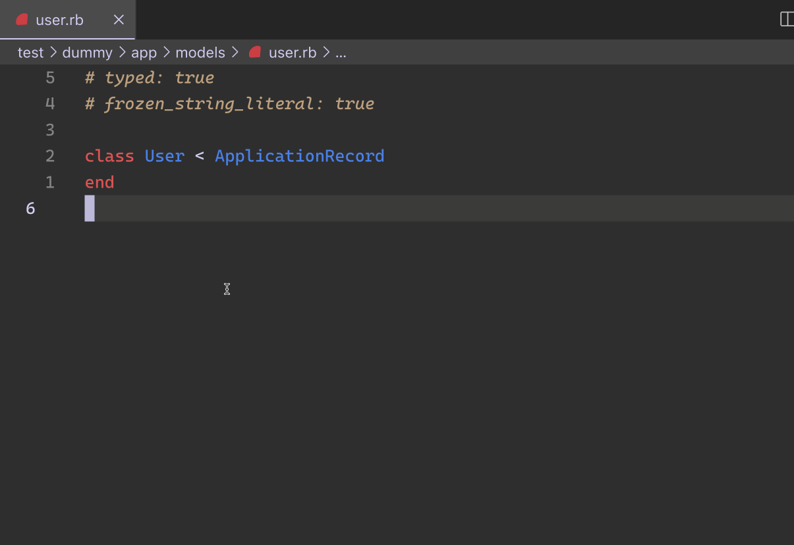

class RubyLsp::Rails::Hover

Augment hover with information about a model.
Example¶ ↑
User.all # ^ hovering here will show information about the User model
Constants
- ResponseType
Attributes
_response[R]
Public Class Methods
new(client, nesting, index, dispatcher)
click to toggle source
Calls superclass method
# File lib/ruby_lsp/ruby_lsp_rails/hover.rb, line 36 def initialize(client, nesting, index, dispatcher) super(dispatcher) @_response = T.let(nil, ResponseType) @client = client @nesting = nesting @index = index dispatcher.register(self, :on_constant_path_node_enter, :on_constant_read_node_enter, :on_call_node_enter) end
Public Instance Methods
on_call_node_enter(node)
click to toggle source
# File lib/ruby_lsp/ruby_lsp_rails/hover.rb, line 77 def on_call_node_enter(node) message_value = node.message message_loc = node.message_loc return unless message_value && message_loc @_response = generate_rails_document_link_hover(message_value, message_loc) end
on_constant_path_node_enter(node)
click to toggle source
# File lib/ruby_lsp/ruby_lsp_rails/hover.rb, line 47 def on_constant_path_node_enter(node) entries = @index.resolve(node.slice, @nesting) return unless entries name = T.must(entries.first).name content = +"" column_info = generate_column_content(name) content << column_info if column_info urls = Support::RailsDocumentClient.generate_rails_document_urls(name) content << urls.join("\n\n") unless urls.empty? return if content.empty? contents = RubyLsp::Interface::MarkupContent.new(kind: "markdown", value: content) @_response = RubyLsp::Interface::Hover.new(range: range_from_location(node.location), contents: contents) end
on_constant_read_node_enter(node)
click to toggle source
# File lib/ruby_lsp/ruby_lsp_rails/hover.rb, line 65 def on_constant_read_node_enter(node) entries = @index.resolve(node.name.to_s, @nesting) return unless entries content = generate_column_content(T.must(entries.first).name) return unless content contents = RubyLsp::Interface::MarkupContent.new(kind: "markdown", value: content) @_response = RubyLsp::Interface::Hover.new(range: range_from_location(node.location), contents: contents) end